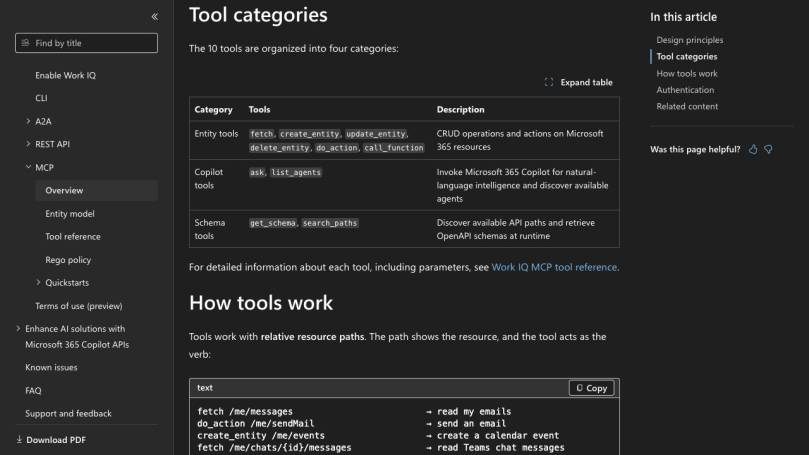
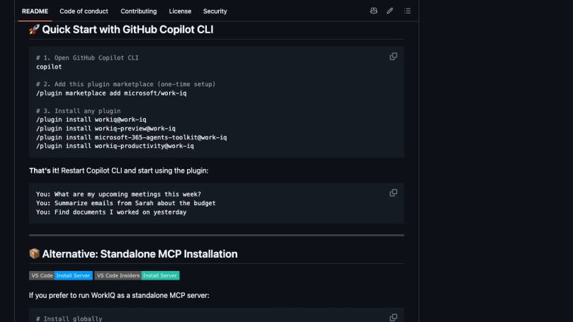
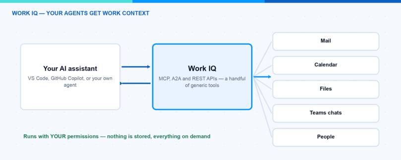

Your Microsoft 365 tenant already contains the context that many AI agents are missing: meetings, email, Teams conversations, documents, people and decisions. The hard part is not generating another answer. The hard part is giving an agent the right work context without building a second data platform or bypassing Microsoft 365 permissions.
This is exactly where the Work IQ API becomes interesting. Microsoft currently provides Work IQ as a public preview across CLI, MCP, A2A and REST experiences. In this guide I focus on the path that is easiest to test: install the official package, connect the MCP server and ask useful questions against your own Microsoft 365 context.
I also cover the part that matters in an enterprise: tenant enablement, user permissions, tool boundaries and a rollout that starts read-only.
What is the Work IQ API?
Work IQ is Microsoft’s work-context layer for AI solutions. It makes Microsoft 365 information available through supported interfaces while keeping the user, tenant and policy context intact.
The useful distinction is this:
- The CLI is the quickest way to test a natural-language query.
- MCP exposes Work IQ tools to a compatible AI client or agent.
- A2A supports agent-to-agent scenarios.
- REST is the lower-level option for an application that needs direct API integration.
The Work IQ MCP server does not load hundreds of narrowly defined tools into the model context. Microsoft currently documents ten generic tools. They cover Microsoft 365 entities, Microsoft 365 Copilot requests and schema discovery. The resource path tells the tool what it should work with.
That design matters. A smaller tool surface is easier for an agent to understand, while runtime schema discovery keeps the integration extensible.

The current Work IQ MCP categories in the official Microsoft Learn documentation. Screenshot captured in the browser on 27 July 2026.
What can an agent ask Work IQ?
The most useful prompts connect information that is normally spread across several applications. For example:
- “What meetings do I have tomorrow, and which documents should I read first?”
- “Summarize the latest email and Teams context for Project Contoso.”
- “Find the document I worked on yesterday and list the decisions that still need an owner.”
- “What did we agree about authentication for the customer portal?”
These are not database queries that a user should have to construct manually. Work IQ lets the agent reason over the Microsoft 365 context that the signed-in user is allowed to access.
That last sentence is important: Work IQ is not a shortcut around Microsoft 365 authorization.
What do I need before the first query?
I would check these prerequisites before touching the client configuration:
- A supported Microsoft 365 tenant and user. Confirm the current preview and licensing requirements for the interface you want to use.
- Tenant enablement and admin consent. The Work IQ service principal must be enabled correctly. An end user cannot solve this with a local npm command.
- Node.js 18 or later. The official Work IQ package is distributed through npm.
- A supported client. This can be the Work IQ CLI, GitHub Copilot CLI or another MCP-compatible client.
- A test account and test scope. Start with a user and data set that make it easy to verify whether the result is correct.
Microsoft labels Work IQ as a preview in the current documentation and repository. I would therefore validate the terms, supported workloads and tenant controls again before using it for a production process.
How do I install the standalone Work IQ CLI?
Install the current package globally:
npm install -g @microsoft/workiq
Start the MCP server with:
workiq mcp
If you do not want a global installation, use npx:
npx -y @microsoft/workiq mcp
For the first test, follow the authentication flow shown by the client and ask a question whose answer you already know. A calendar query is a good starting point because it is easy to verify:
What meetings do I have tomorrow?
Then try a prompt that needs two sources:
Summarize tomorrow's customer meetings and find the latest document for each project.
The second prompt is a much better test. It shows whether the integration can retrieve related work context instead of only returning a single calendar list.
How do I use Work IQ with GitHub Copilot CLI?
Microsoft also publishes Work IQ as a plugin marketplace for GitHub Copilot CLI. The current quick start is:
copilot
/plugin marketplace add microsoft/work-iq
/plugin install workiq@work-iq
Restart Copilot CLI after the installation. You can then start with prompts such as:
What are my upcoming meetings this week?
Summarize emails from Sarah about the budget.
Find documents I worked on yesterday.

The real plugin commands and sample prompts in the official Microsoft Work IQ repository. Screenshot captured in the browser on 27 July 2026.
I like this route for an initial test because it removes most client configuration. For a reusable agent workflow, I would still document the standalone MCP configuration explicitly so the dependency is visible in the repository.
The current MCP surface is split into three visible groups:
fetch, create_entity, update_entity, delete_entity, do_action and call_function work with Microsoft 365 resources. The path identifies the resource; the tool provides the action.
This can cover read operations as well as changes such as creating an event or sending a message. That is why I would not enable every operation on day one.
ask invokes Microsoft 365 Copilot for natural-language reasoning, while list_agents discovers available agents. This is useful when the task needs a synthesized answer rather than a single entity response.
get_schema and search_paths let an agent discover supported paths and schemas at runtime. The agent does not need every possible Microsoft 365 type in its prompt before it starts.
The architecture behind these tools is also why MCP fits well with the broader agent tooling surface I described in my Skills, MCP and CLI overview.

What is a sensible first enterprise use case?
Start with a read-only workflow that has a human-verifiable answer. One example is meeting preparation:
- Retrieve the next customer meeting.
- Find the latest related emails and documents.
- Summarize decisions, open questions and owners.
- Return source links with the summary.
- Let the user decide what happens next.
This workflow creates value without immediately allowing the agent to send messages or change records. It also gives you a simple evaluation set: were the correct meeting, documents, decisions and source links returned?
Once retrieval is reliable, add one write action at a time. Creating a draft calendar item is a safer next step than sending an email automatically.
How should I secure Work IQ?
I would use the same control pattern as for any agent with business data:
- Respect delegated access. Test with real user roles, not only a global administrator.
- Separate read and write scenarios. Do not expose mutation tools when the workflow only needs retrieval.
- Require confirmation for consequential actions. Sending mail, changing calendar items and deleting entities should not happen silently.
- Keep source links in the answer. Users need to verify where a conclusion came from.
- Log the tool path and outcome. You should be able to reconstruct what the agent requested.
- Review preview changes. Tool names, paths, terms and prerequisites can change while the service is in preview.
Microsoft documents broad OAuth permissions combined with more granular policy enforcement by path, method and tenant policy. That is more manageable than creating a new permission for every resource, but it makes tenant policy design even more important.
My rollout checklist
Before I would call a Work IQ pilot successful, I would verify:
- tenant enablement and admin consent are documented;
- the test user only sees information they can open in Microsoft 365;
- at least five known questions return the expected sources;
- unavailable data produces a clear limitation instead of an invented answer;
- write tools are disabled or approval-gated;
- package versions and preview dependencies are recorded;
- an owner is assigned for reviewing changes in the official documentation.
My conclusion
The Work IQ API is interesting because it gives an agent governed work context without asking you to copy Microsoft 365 into another knowledge store first. The technical quick start is short. The real work is selecting the correct tenant controls, testing retrieval quality and deciding which actions the agent should be allowed to perform.
My recommendation is simple: begin with a read-only meeting-preparation scenario, use the official CLI or MCP package, and evaluate every answer against known Microsoft 365 sources. If that works reliably, expand the workflow one permission and one action at a time.
I hope this is a little help.
Stay healthy, Cheers Jannik